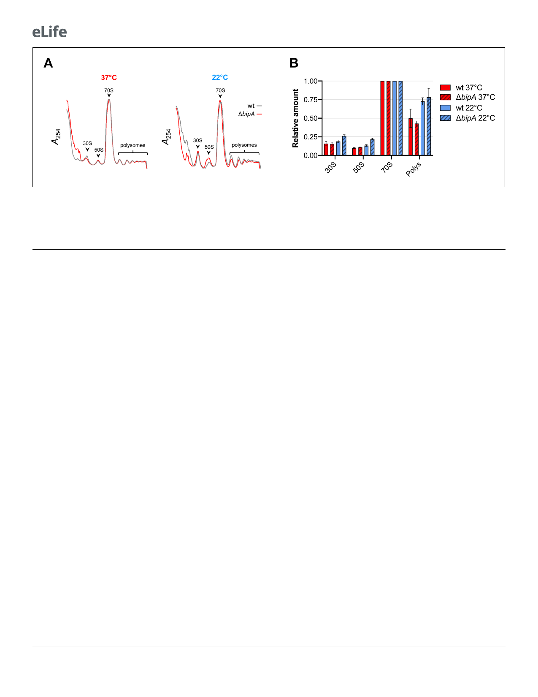

Research article
Microbiology and Infectious Disease
Figure 5. Ribosome assembly analyses in the wild-type and the bipA mutant. (A) Representative traces of sucrose gradient sedimentation experiments,
involving cells grown at 37˚C or 22˚C, as indicated. Absorbance at 254 nm (A254) is shown from the top to the bottom of the gradient (left to right), and
peaks corresponding to 30S, 50S, 70S, and polysomes (multiple ribosomes per mRNA) are indicated. (B) Levels of 30S particles (30S), 50S particles (50S),
and polysomes (Polys), normalized with respect to 70S monosomes (70S), from various cells as indicated.
Proteomic differences between co969 WT and DbipA were greater at 22˚C than at 37˚C, suggest-
ing that BipA is more active or influential at lower temperatures (Figure 6A and B). Relative to the
WT strain, 250 proteins were more abundant in DbipA cells at 22˚C, and 52 proteins were less abun-
dant (Figure 6C). The most represented differentially produced proteins were related to external
cellular components and biological processes involved in localization and transport (Figure 6C). We
identified a number of biofilm components among the upregulated proteins, confirming that BipA
acts to inhibit biofilm formation-associated processes at low temperatures (i.e. 22˚C). Consistent
with this finding, the co969 DbipA mutant exhibited 10–20% reduced motility compared to the WT
strain, with motility slightly more reduced at 22˚C than at 37˚C (Supplementary file 1 – Supplemen-
tary Figure 6A). We observed similar phenotypes in the co969:hapRc background
(Supplementary file 1 – Supplementary Figure 6B), indicating that the effect of BipA on motility is
independent of the presence of HapR.
Translation of biofilm genes is reduced by the presence of BipA at low
temperature
To validate the effects of BipA on the production of biofilm-associated genes in the proteomic analy-
sis (Figure 6A–C; Supplementary file 8), we carried out b-galactosidase assays with co969 DbipA
and co969 strains carrying translational reporter fusions to several biofilm components or regulatory
genes (vpsR, vpsT, vpsL, vpsU, and bap1). Additionally, we included translational reporter fusions to
housekeeping genes, gyrA and hfq, and the cell wall biosynthesis gene, mrcA, as controls. The
results demonstrated increased translation of all biofilm-related proteins in the co969 DbipA mutant
vs. WT, especially at 22˚C (Figure 6D). Critically, no substantial changes were observed for gyrA,
hfq, and mrcA, indicating that production of these proteins is largely independent of BipA.
Akin to the biofilm structural genes, translation of vpsR and vpsT was higher in the co969 DbipA
background, especially at 22˚C (Figure 6D). However, compared to the biofilm structural genes, the
transcriptional levels of these two major biofilm regulators were mostly unchanged at different tem-
peratures and between DbipA and WT (Figure 6—figure supplement 1; Supplementary files 3,
4 and 5). Collectively, these results suggest that BipA influences the production of many proteins at
22˚C, including key biofilm regulators, potentially explaining the importance of BipA in temperature-
dependent formation of biofilm-associated colony morphology.
Discussion
The molecular mechanisms that underlie biofilm development in V. cholerae are complex and rely on
many different inputs and pathways that converge on the regulation of the core biofilm regulon.
9 of 23